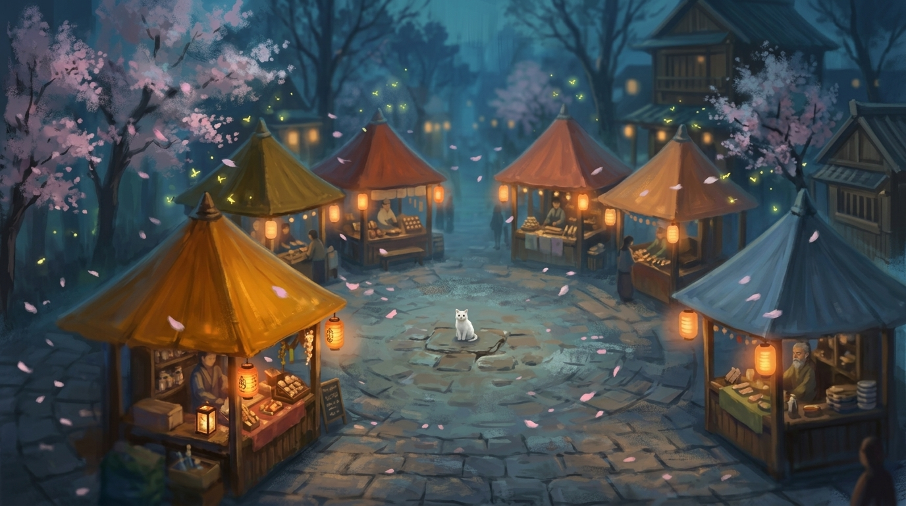

Pola — A Virtual Market of AI Shopkeepers
Seven AI shopkeepers, one live commerce MCP, and the notion that a market beats a chat widget. Originally built for the Kapruka Agent Challenge 2026, now sitting in my portfolio.

When I was a kid I used to imagine tiny shopkeepers living inside ecommerce websites. A little person behind every category who actually knew what they were selling. That image never really left me. And that image was my inspiration.
Don't Build a Chat Widget, Build a Place
The Kapruka Agent Challenge asked for "a polished, immersive conversation as the main surface — not a tiny widget in a corner." I thought most entries would read that as an instruction to build a bigger chat box. I decided to read it literally: the chat is the destination, but you reach it by walking into a small, warm, hand-built 3D village first.
Pola is the Sinhala word for an open-air marketplace. It's the kind of place where people browse, linger, and talk before they buy. This was my base. It just made sense. I built a market square with seven lit-up stalls, each with its own shopkeeper, rather than a flat list of product categories. It also gave every idea I wanted to explore a place to live. Kapruka's enormous, genuinely undifferentiated catalog (groceries next to electronics next to baby trolleys) becomes something a customer can understand spatially in two seconds — gifts are over there, tech is over there — instead of something they have to read through a menu to find.
The obvious risk is that a 3D scene reads as a tech demo, performs badly, or gets in the way of actually shopping. Every decision below exists to make sure the 3D layer earns its place without ever blocking the real loop, which is discovery → cart → checkout.
The World Itself
The whole frontend is a single index.html — Three.js r128 loaded straight from a CDN, vanilla JavaScript, with no bundler or build step. Inside it is a deliberate Ghibli-leaning, toon-shaded, low-poly look, chosen instead of anything trying to be photorealistic.
MeshToonMaterial with a hand-built four-step gradient texture sits on almost every mesh, and a slightly oversized, backface-culled duplicate of each shape gives the dark ink-outline look of hand-drawn animation. It's a style choice, because outlines and flat shading read as intentional in a screenshot in a way default-lit PBR never does, and they happen to render for free on a laptop with no GPU guarantee. A gradient sky dome, a firefly particle system, and a procedural cherry-blossom petal fall round out the atmosphere. All of these were built from primitive geometry, which means nothing imported, nothing to license, and nothing to fail to load.
Seven pavilions sit on a lit courtyard, each a cylinder-and-cone hut coloured to its trade and decorated with a small clue to what it sells: an apple for the grocer, a diamond for fashion, a gift box for gifting, a flatscreen for tech, etc. Small details, but I included them because I wanted a difference between "seven identical boxes with labels" and "seven stalls that look like what they sell." A guide character, Sudu, anchors the courtyard's centre.
Camera as Motion
Walking up to a stall doesn't teleport the camera. A render-loop lerp eases the camera position and look-target in over several frames while a darkening overlay fades up and a ← Back to Courtyard button appears. I included this small bit of motion to try and turn "this is a webpage with a 3D background" into "I am walking up to a stall". This was cheap to implement, and disproportionately effective.
Seven Pavilions, Turning a Catalog Into Characters
The hardest part of Kapruka's MCP for any single agent is that the catalog is enormous and the categories cut across each other in non-obvious ways. For example, liquor and non-alcoholic wine both file under "Grocery," adult products and intimate pharmacy both file under "Pharmacy." A single generalist bot would need a huge, brittle system prompt trying to hold the whole taxonomy in its head, and would constantly answer from the wrong part of the catalog.
My answer was to split the catalog into seven pavilions that mirror how a Sri Lankan market is actually organised, and give each one its own dedicated shopkeeper, complete with a name, an age, a backstory, a speaking style, and a narrow slice of the taxonomy. Walk through the courtyard below and tap a stall to meet whoever's behind the counter.
↓ tap a stall, or the cat in the middle
Tap any pavilion above to meet its shopkeeper.
Each system prompt bakes in a full character sheet: a name, an age, a speaking style, and behaviour rules tuned to what could actually go wrong in that specific aisle. Tap around above to see a few.
No shopkeeper is allowed to pretend they can sell everything, either. Every prompt carries the full market directory and a standing rule to refer a customer elsewhere by name when their need fits another pavilion better. For example, Sampath Aiya genuinely wouldn't know which perfume to recommend, and having him admit that and point you to Safi is more trustworthy than having him bluff it. And every reply is written as a voice note instead of as bullet lists. Markdown renders as literal asterisks in the chat bubble, so a server-side strip_markdown pass backstops the rare turn where a model ignores that instruction anyway.
Sudu — The Guide Who Doesn't Sell Anything
Most agent demos put one bot in charge of everything. I deliberately split "figuring out where to go" from "actually buying something," and gave the first job to a separate, much simpler character: Sudu, a small white cat who knows every corner of the market but explicitly sells nothing herself.
Sudu is intentionally tool-free, i.e. no MCP round-trips, so replies are snappy and the architecture stays cleanly split between navigation and commerce. Rather than forcing her into structured output, which would fight against her loose, cat-like voice, a lightweight keyword scan turns any place-name signal in her free-text reply into a tappable chip:
Sudu says, "That's Tharushi, at Gifts & Celebrations — go on, she'll sort you out."
Sudu offers four preset chips on first open so a visitor can get moving with one tap instead of staring at a blank input. Every reply after that regenerates chips dynamically from what she just said. It's the Creativity answer, too. Instead of a settings menu or a category sidebar, "I don't know where to go" is handled by a character in the world, in plain English.
System Architecture
The frontend never talks to Gemini, Cerebras, Groq, or the Kapruka MCP directly. It only ever calls its own backend's four endpoints — /api/chat, /api/delivery-cities, /api/check-delivery, /api/cart-checkout — which is what lets one backend run the same MCP session lifecycle, the same product-card curation, and the same anti-hallucination guardrails no matter which model provider actually answered a given turn.
A fifth route, GET /, is a lightweight health check. This reports which model API keys are loaded without triggering any model or MCP call, so the backend's state is readable in one request, no model call required.
The Backend, In Depth
The 3D scene gets the attention, but most of the actual engineering risk lived in three backend decisions. Open any card to read the reasoning.
Gemini → Cerebras → Groq. Three providers, six model endpoints, tried in order within a single request.
/api/chat tries Gemini first, cheapest-first (gemini-2.5-flash-lite → gemini-2.5-flash → gemini-2.0-flash), then falls back to Cerebras (gpt-oss-120b, zai-glm-4.7), then Groq (llama-3.3-70b-versatile, llama-4-scout).
Every provider here runs on a free tier, and free tiers rate-limit. A single-provider build is one 429 away from failing live mid-conversation, in front of whoever's trying it. The fallback chain means a transient outage degrades response quality slightly, with a different model finishing, the same agentic loop, rather than breaking the demo outright. A _fallback field exists for my own debugging, but it's never shown to customers, because a shopkeeper apologising for "switching AI providers" would break character for no benefit.
Streamable-HTTP transport implemented directly, instead of an off-the-shelf MCP library. initialize → capture Mcp-Session-Id → notifications/initialized → repeatable tools/call, with both plain-JSON and Server-Sent-Events response bodies handled by hand.
Session correctness under concurrency. A single chat turn can trigger several parallel tool calls, so the lazy session-init path is guarded with an asyncio.Lock and a double-check, so two coroutines racing to initialise at the same moment can't each spin up their own session and clobber each other.
429 resilience. The free MCP tier caps at 60 requests/minute per IP, and a busy chat turn can burst past that. One short, capped retry absorbs a momentary spike without making every dropped request fatal.
Self-healing sessions. If a tool call fails mid-conversation because a session expired, the backend re-initialises once and retries automatically instead of surfacing a raw error and derailing the conversation.
Gemini and the OpenAI-compatible providers don't speak the same tool-calling format. gemini_loop() uses Gemini's native function_declarations / functionCall format; openai_loop(), shared by Cerebras and Groq, uses the OpenAI-style tools[] / tool_calls[] format. Both run up to MAX_LOOPS = 8 rounds of "model decides to call a tool → tool runs → result goes back → model decides again," so a fallback model gets exactly the same live-catalog grounding the primary model does.
Within a round, tool calls run concurrently via asyncio.gather. If a model wants to search two things and check delivery in the same turn, those happen in parallel. asyncio.gather preserves input order in its output regardless of which call finishes first, which matters for the OpenAI-style loop because tool_call_ids have to pair back to the right result.
Both loops write into one shared tool_history list, so every downstream step (product extraction, order-summary construction, card curation) works identically no matter which of the six models answered.
Guardrails, Because Models Lie Confidently
A raw LLM-plus-tools loop against a real commerce API will, left alone, occasionally hallucinate a category slug, invent a product ID, or surface an adult-section product to a general audience. Every row below exists because I watched the failure happen during testing, and a fix in the system prompt alone didn't reliably hold.
| Guardrail | What breaks without it |
|---|---|
| Category slugs only forwarded once confirmed | Kapruka's category filter is exact-match; a guessed slug returns zero results, and the model confidently tells the customer the product doesn't exist. |
SHOW_CARDS allowlist | Search spans the whole catalog. A "rice" query legitimately returns rice cookers (Kavindu's) alongside rice meals (Sampath's). The model (not the raw API response) decides which IDs belong on screen for the shopkeeper you're actually talking to. |
| Lounge filter, both directions | A keyword filter drops adult/liquor/tobacco items outside The Lounge even if a persona's card line includes one, and the inverse filter keeps a rose bouquet out of the 21+ section. |
| IDF re-ranking on 20 fetched results | Kapruka's default ordering doesn't always surface the most relevant result first; a self-calibrating term-weight pass re-sorts before the model ever sees the list. |
_query_matched: false flag | Without it, a "fish tank" search returning cleaning supplies looks plausible enough that the model recommends it anyway instead of admitting the gap. |
| Hard cap of 8 cards, enforced twice | The prompt asks for 6–8; the backend caps it again regardless, so a model that ignores curation can't dump twenty cards on one message. |
| Today's date injected into every prompt | Left to infer "today" from training data, the three providers disagreed with each other and with the calendar, which rejected valid near-future delivery dates as "in the past." |
Closing the Loop, Twice
Getting all the way to a placed order mattered most here. I built two distinct, complete checkout paths, because they serve two genuinely different shopping behaviours.
Inside the chat itself. The shopkeeper collects recipient name, phone, delivery address, city, date, and — for Tharushi especially — an optional gift message, entirely through dialogue, then calls kapruka_create_order directly. This path is scoped to each shopkeeper's own pavilion, mirroring a real market stall: Tharushi handles gifting orders, Kavindu handles electronics, and so on. Cross-pavilion carts are what the other tab is for.
- The response is parsed as structured JSON so the price breakdown comes back as real numbers.
- If checkout is called on a product ID that was never actually looked up this conversation, the backend detects the gap and backfills a fresh product lookup before the summary renders.
- Dev, at The Lounge, is the only shopkeeper who also offers an anonymous sender option — the one context in the market where someone might actually want it.
For the browse-then-decide shopper. Add to cart from any product card or the lightbox; the cart drawer has its own quantity controls and running total, and "Checkout at the Till" opens a delivery-details form. These three endpoints are deliberately thin, stateless, and model-free. There's no conversation to extract structure from, so there's no reason to pay for an LLM round-trip just to fill in a form.
- Live city autocomplete and a live delivery-fee/date preview update the moment both city and date are chosen, before the order is even placed.
- Delivery details are remembered in
localStorage, updated only after a successful order, with an explicit "Clear saved details" escape hatch. - Submitting builds the same order-summary shape the chat flow does, and hands off to the same Order Summary modal. There is one UI, with two ways to reach it.
One detail ties both paths together: conversation history is trimmed to the last 10 turns per request, which would normally make checkout forget a product ID mentioned several turns earlier. The frontend sends the current cart on every request, and the backend injects it as a confirmed-cart block in the system prompt — the one piece of state that has to survive the trim.
Where the Effort Went
Six things mattered most while I was building this, roughly in the order I paid attention to them. Open any card for the reasoning behind it.
Toon-shaded 3D scene, camera-lerp navigation, ambient sound, mobile gate — nothing that breaks the illusion.
Every asset (the toon shading, the ink outlines, the gradient sky, the market sounds) pulls from the same reference mood board. The scene has been built in such a way that the illusion holds regardless of whether someone's on a gaming laptop or a mid-range one with three other tabs open.
Product card grids, an image lightbox, an Order Summary modal with real photos, hand-built stall decorations per pavilion.
A product card without a real photo reads as a placeholder. I built this such that the card, the lightbox, and the final order summary all pull the same image. Each pavilion also got one small hand-modelled detail tied to what it sells, instead of seven identical huts with different labels on the door.
Names, ages, backstories, speech patterns, and worked example lines baked into every system prompt.
Each prompt reads more like a character brief than an instruction sheet — how they'd actually talk, what they'd notice, what they'd never say. The difference shows up fast: ask Sampath Aiya about skincare and he tells you flatly that's not his aisle, instead of bluffing an answer.
Sudu as a routing layer, IDF re-ranking, domain-specific rules per shopkeeper, two complete checkout paths.
Most of this came from watching the agent fail during testing, not from planning it up front — a category slug that silently returns nothing, a search that surfaces the wrong half of the catalog, a customer with no idea which of seven stalls to even start at. Each fix patches a specific failure rather than a vague "be more careful" instruction.
Conversational and cart-drawer checkout both flow into the same Order Summary modal with working pay links.
The easy version of this stops at "the shopkeeper can describe how checkout would work". Plenty of agent demos do exactly that. Both paths here call the same order-creation endpoint and land on the same confirmation screen, ending in an order that's actually been placed.
The market-as-place metaphor, and Sudu as a cat you ask in plain English instead of a menu.
The easiest version of this project is one chatbot with a category dropdown. Building an actual place, complete with a courtyard, seven stalls, a guide who points you around instead of a settings screen, was the slower, riskier option, and the one I actually wanted to see exist.
A few other things just needed to work under the hood: a cart drawer with quantity controls and a running total, a live delivery-date preview before an order is placed, and gift messaging from Tharushi that flows straight through to the final order summary.
What's Next
Sinhala and Tanglish support. Every persona is currently English-only. The underlying models are multilingual and would likely handle either reasonably, but that's untested. For a market meant to feel local, it's probably the one addition that would matter most.
Structured cross-stall referrals. Shopkeepers already refer customers to each other by name in conversation, and Sudu's chips work today. The one-tap cross-pavilion banner UI is built but not yet wired to a backend signal. This would just be a classifier step after the agentic loop.
Proactive delivery-date warnings. The delivery-check tool and cart preview both work correctly; no persona yet volunteers a tight-window warning unless asked. This would just be a prompt addition.
Everything Used
| 3D scene | Three.js r128 (CDN, no bundler) | Free |
| Frontend | Vanilla JS & hand-written CSS, single index.html | Free |
| Backend | FastAPI + httpx (async), on Render | Free tier |
| Primary model | Gemini (flash-lite → flash → 2.0-flash) | Free tier |
| Fallback chain | Cerebras → Groq | Free tier |
| Commerce | Kapruka MCP — search, delivery, checkout, orders | Provided |
| Frontend hosting | GitHub Pages | Free |
Pola is live. Walk into the courtyard, find a pavilion, and talk to whoever's behind the counter.
If you're thinking about agentic commerce or multi-persona system design, or you have questions about any of the decisions above, I'd genuinely like to hear from you.
Open Pola